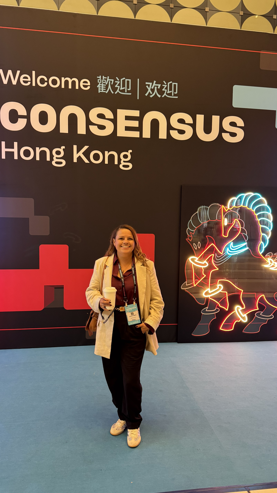

Be curious. Learn a little of everything. You never know when you will use it.
That is what I tell teenagers when they ask for advice. It is also exactly how my life went.
I am half Alagoana, half Gaucha. I started my career as a trainee at Moveis Carraro, a furniture manufacturer in southern Brazil. I did not walk in knowing what I wanted. I walked in curious. I worked my way up to Special Big Account Manager and Export Manager, won an international trade award, and shipped furniture to places I had never been. That is when the world opened up.
I did my MBA in International Trade at FGV. Then I got curious about fashion, so I went to study luxury marketing at Instituto Marangoni in Paris. Then sustainability. Then blockchain. I kept following what interested me, and somewhere along the way it all connected. I use everything I studied in what I do today.
In 2012 I moved to Cape Town. I opened the office for AF African Brazilian Trade. My name was on the door. I built trade routes between Brazil and Africa, container by container, relationship by relationship. I also wrote about that life. I had an article published in TAM Airlines' in-flight magazine about bringing my mother, Dona Cida, to see her first African lion.
Blockchain found me when I was deep in trade and emerging markets. I saw exactly which problems it could solve because I had lived those problems. I teach blockchain independently, to professionals and institutions who want to understand the space. I also do fractional GTM at OnchainLabs, focused on Africa and Latin America. And I speak at conferences, translating a complicated industry into language people can actually use.
I do all of this as a mother of three. Three kids, a dog, a full passport, and a to-do list that never ends. Both things are true at the same time. I stopped trying to separate them.